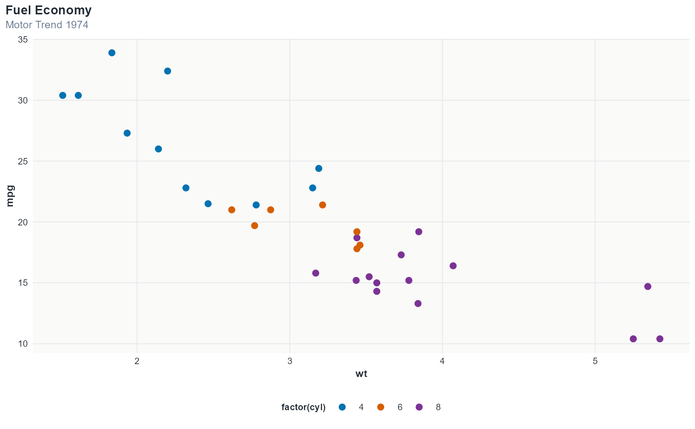

Editorial ggplot2 theme for reports, preprints, and presentations
Source:R/utils.R
theme_editorial.RdWarm off-white panel (`#FAFAF8`), subtle gridlines (`#E5E7EB`), dark ink text (`#1F2933`), and slate subtitles (`#64748B`), with sizes respecting the active journal preset's text floor. Ideal for clinical study reports, preprints, and web articles.
Usage
theme_editorial(
journal = "preprint",
base_size = NULL,
base_family = NULL,
legend_position = "bottom",
grid = c("both", "y", "x", "none")
)Arguments
- journal
Any registered journal or purpose id (see [journal_specs()]). Defaults to `"preprint"`.
- base_size
Body font size in points. `NULL` (default) uses the journal/purpose preset's `body_pt`.
- base_family
Font family. `NULL` (default) uses [journal_font()].
- legend_position
Legend position (default `"bottom"`).
- grid
Gridlines to draw: `"both"` (default), `"y"`, `"x"`, or `"none"`.
See also
Other themes:
theme_journal(),
theme_journal_text(),
theme_olinkviz()
Examples
library(ggplot2)
ggplot(mtcars, aes(wt, mpg, colour = factor(cyl))) +
geom_point(size = 2) +
scale_colour_olinkviz("editorial") +
labs(title = "Fuel Economy", subtitle = "Motor Trend 1974") +
theme_editorial()
